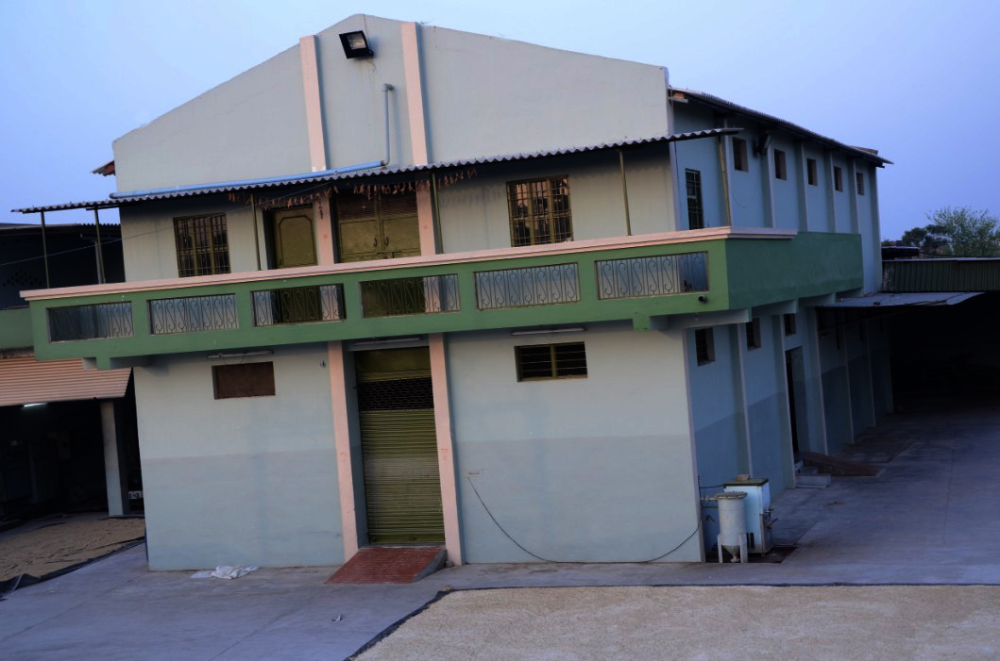

To Know More About Us
SAGUN is the renowned name in the field of Acid Casein. We are the biggest manufacturer and supplier of Industrial Grade Acid Casein and Edible Grade Acid Casein in India. Established in 1935, we commenced things with different milk products. Later on in 1999, we put steps in the Casein Manufacturing sector under the name Sagun Food & Dairy Products with the vision to lead market by serving it with the supreme quality of Casein.

With the skills of the industry and motto to lead the business we have attained a top-niche in both domestic and international markets, as a Manufacturer, Supplier and Exporter of wide array of products. Our products are widely used in various industries such as Safety Match, Paint, Chemical, Leather, Paper, Textiles, Plastics and many more. We took the Casein trade out of its unorganized and scattered starting phase, which was restricted only to small dairies, milkmen and a handful of suppliers. Therefore quality was also very poor and inconsistent. Due to such concerns there was an imbalance between the cost given to the producers and price charged to the customers. Since those days Morena used to be the biggest industrial area for the production of Casein but it never got its due name for this.
To give the real identification to Morena as the biggest Casein producing belt, to eliminate the imbalance of cost between producers and customers, and to serve the market with the best quality products on competitive prices, we established Casein business in late nineties. And in a very short span we obtained a handsome market share by handling a large fragment of Casein users in India. As a result of all such constant achievements, Morena is now known as Casein Capital of India. We have further plans to take the name of Morena to the international level by expanding our business to different countries.
The thing which makes Sagun a leader in Casein business is- An interrupted supply of raw Material. Morena is one of the richest milk area in India due to its supportive environmental conditions and rich cattle breeds. It is our major strength to serve quality casein at very competitive price.
Established in 1999, we are now one of the fastest growing Casein Manufacturers and Suppliers in India. Under the constant guidance of our industry experts and leaders, the company has achieved expertise in manufacturing innovative range of Casein. Besides, we are always ready to please the demands of the diverse industries with acute sense of responsibility.
LOCATION
We have our plant at Morena, northern part of Madhya Pradesh.
It’s easy for us to serve our valuable clients located at any part of India since Morena is blessed with the gift of Rail Tracks of Central railway and National Highway No. 3. We are at a nominal distance of 280 K.M. from Delhi, 80 K.M. from Agra and 35 K.M. from Gwalior. So it is connected with road as well as rail transport round the clock. It is also very approachable to our valuable customers.
The thing which makes Sagun a leader in Casein business is- An interrupted supply of raw Material. Morena is one of the richest milk area in India due to its supportive environmental conditions and rich cattle breeds. It is our major strength to serve quality casein at very competitive price.